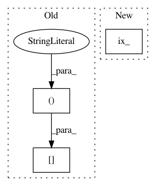

5d19039d90de84c4392e741c687a1b7772ca4eb4,GPy/kern/src/kernel_slice_operations.py,_Slice_wrap,handle_return_array,#_Slice_wrap#Any#,66
Before Change
ret[:, self.k._all_dims_active] = return_val
elif len(self.shape) == 3: // derivative for X2!=None
if self.diag:
ret[:, :, self.k._all_dims_active][:, self.k._all_dims_active] = return_val
else:
ret[:, :, self.k._all_dims_active] = return_val
elif len(self.shape) == 4: // second order derivative
After Change
ret[:, self.k._all_dims_active] = return_val
elif len(self.shape) == 3: // derivative for X2!=None
if self.diag:
ret.T[np.ix_(self.k._all_dims_active, self.k._all_dims_active)] = return_val.T
else:
ret[:, :, self.k._all_dims_active] = return_val
elif len(self.shape) == 4: // second order derivative
In pattern: SUPERPATTERN
Frequency: 4
Non-data size: 3
Instances
Project Name: SheffieldML/GPy
Commit Name: 5d19039d90de84c4392e741c687a1b7772ca4eb4
Time: 2016-05-04
Author: ibinbei@gmail.com
File Name: GPy/kern/src/kernel_slice_operations.py
Class Name: _Slice_wrap
Method Name: handle_return_array
Project Name: iskandr/fancyimpute
Commit Name: 1071d14f6906d6fbbb459446f9764d0604e3ee2a
Time: 2016-01-07
Author: sergeyfeldman@gmail.com
File Name: fancyimpute/MICE.py
Class Name: MICE
Method Name: _perform_imputation_round
Project Name: PyMVPA/PyMVPA
Commit Name: e36d3bc0ae6faf950344e68e5fd2fb8ca0ec43fb
Time: 2008-03-10
Author: per@parsec.Princeton.EDU
File Name: tests/test_signal.py
Class Name: SignalTests
Method Name: testDetrend
Project Name: iskandr/fancyimpute
Commit Name: 1071d14f6906d6fbbb459446f9764d0604e3ee2a
Time: 2016-01-07
Author: sergeyfeldman@gmail.com
File Name: fancyimpute/MICE.py
Class Name: MICE
Method Name: _sub_inverse_covariance